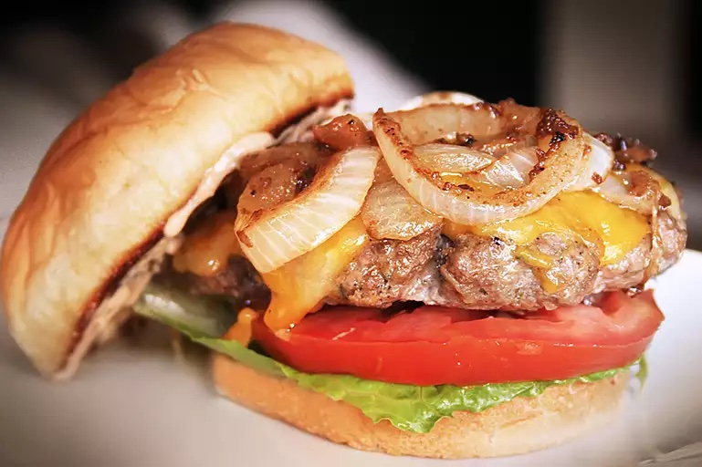

Burger

World's best hamburger
The best burger recipe for summertime grilling! This juicy burger is jam-packed with all kinds of stuff and has no tasteless bread crumbs. Serve on buns with your favorite condiments.
Ingredients
- 1 ½ pounds lean ground beef
- ½ onion, finely chopped
- ½ cup shredded Colby Jack or Cheddar cheese
- 1 egg
- 1 (1 ounce) envelope dry onion soup mix
- 1 clove garlic, minced
- 1 tablespoon garlic powder
- 1 teaspoon soy sauce
- 1 teaspoon Worcestershire sauce
- 1 teaspoon dried parsley
- 1 teaspoon dried basil
- 1 teaspoon dried oregano
- ½ teaspoon crushed dried rosemary
- salt and pepper to taste
Steps
- Preheat an outdoor grill for high heat and lightly oil the grate.
- Combine ingredients.
- Use your hands to form the mixture into 4 patties.
- Cook patties on the preheated grill until no longer pink in the center.